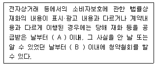
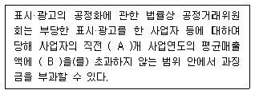
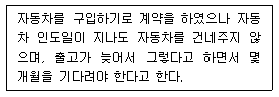
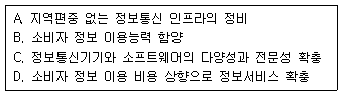
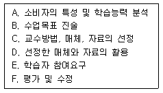
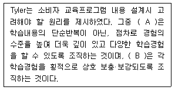
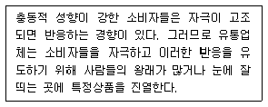

소비자전문상담사-2급 (2010-07-25 기출문제)
1과목: 소비자상담 및 피해구제
1. 콜센터의 일반적인 인바운드 상담 순서를 바르게 나열한 것은?
- 고객상황 탐색 → 고객문의내용 파악 → 해결방안 제시 → 요약 및 종결
- 고객문의내용 파악 → 고객상황 탐색 → 해결방안 제시 → 요약 및 종결
- 해결방안 제시 → 고객문의내용 파악 → 고객상황 탐색 → 요약 및 종결
- 고객문의내용 파악 → 해결방안 제시 → 고객상황 탐색 → 요약 및 종결
(정답률: 알수없음)

2. 소비자상담시 전문용어를 사용하는 것이 가장 효과적인 경우는?
- 오만하고 자존심이 강한 소비자를 설득할 때
- 화난 소비자의 감정상태를 가라앉혀야 할 때
- 소비자와 기업의 입장을 중재하는 입장에 있을 때
- 장황하게 말하는 수다스러운 소비자를 상대할 때
(정답률: 알수없음)
3. 기관별 구매 전 상담의 특성에 관한 설명으로 틀린 것은?
- 행정기관, 소비자단체, 기업 등 소비자 상담 업무를 수행하는 기관에 따라 상담의 내용과 목적에 차이가 있다.
- 기업에서는 제품과 관련된 정보제공이 주로 이루어진다.
- 행정기관 및 소비자단체는 소비생활 전반에 관련된 정보를 폭넓게 제공해야 한다.
- 기업에서는 제품의 구매선택보다는 소비생활 전반에 관련된 정보를 제공해야 한다.
(정답률: 알수없음)
4. 가구를 구입한 소비자 A씨가 구입일로부터 13개월 후 가구에서 좀 등 벌레가 발생했음을 확인했을 때 소비자분쟁해결기준에 의한 보상기준은?
- 제품교환
- 구입가 환급
- 무상수리 또는 부품교환
- 제품가의 50% 공제 후 환급
(정답률: 알수없음)
5. 소비자분쟁해결기준이 소비자보호에 기여한 내용에 관한 설명으로 가장 적합한 것은?
- 별도의 유리한 분쟁해결기준이 있어도 소비자분쟁해결기준을 우선 적용하므로 기여한 바가 매우 크다.
- 법원 판결과 같이 확정적이고 최종적인 의미로서 분쟁해결에 기여한 바가 매우 크다.
- 소비자피해의 사후적 구제과정에서 기여한 바가 매우 크다.
- 소비자피해의 사전예방적 차원에서 기여한 바가 매우 크다.
(정답률: 알수없음)
6. 소비자분쟁해결기준의 법적 근거는?
- 소비자기본법
- 독점규제 및 공정거래에 관한 법률
- 소비자생활협동조합법
- 방문판매 등에 관한 법률
(정답률: 알수없음)
7. 기업의 고객만족경영 정착을 위한 실천과제에 해당되지 않는 것은?
- 고객만족경영에 대한 최고경영층의 인식전환과 확고한 의지가 필요하다.
- 고객의 욕구와 불만을 신속하고 정확하게 파악하여 신제품 개발, 서비스 개선 등 기업경영 전반에 반영시켜야 한다.
- 기업 내의 자원배분이 판매지향적으로 이루어질 수 있도록 시장조사 등 다양한 방법이 모색되어야 한다.
- 사고의 전환과 기업문화의 혁신뿐만 아니라 업무수행 방식의 혁신이 동시에 진행되어야 한다.
(정답률: 알수없음)
8. 행정기관에서 제공하는 소비자상담의 내용으로 가장 적합한 것은?
- 소비자 문제의 피해구제
- 제품에 대한 애프터서비스
- 특정 기업제품에 대한 사전 정보 제공
- 제품에 대한 고객만족도 조사
(정답률: 알수없음)
9. 콜센터의 아웃바운드 상담의 활용분야가 아닌 것은?
- 직접 판매
- 반복구매 촉진
- 가망고객 획득
- 컴플레인 접수 처리
(정답률: 알수없음)
10. 소비자분쟁해결기준상 자동차의 부품보유기간은? (단, 성능·품질상 하자가 없는 범위 내에서 유사부품 사용 가능)
- 3년
- 5년
- 8년
- 10년
(정답률: 알수없음)
11. 기업에서 수행하는 소비자상담의 내용과 그 목적에 관한 설명으로 틀린 것은?
- 상품검사 및 정보제공 - 소비자의 건전하고 합리적인 선택 도모
- 소비자 교육 및 계몽 - 대소비자 홍보 및 소비자와의 긍정적 관계 형성
- 소비자의 기대수준 파악 - 수준에 맞는 제품제공으로 고객만족도 제고
- 제품사용 및 제품관리에 대한 정보제공 - 소비자 과실로 인한 피해 최소화
(정답률: 알수없음)
12. 일반적 소비자분쟁해결기준에 관한 설명으로 틀린 것은?
- 품질보증기간 동안의 수리비용은 사업자가 부담한다.
- 불가피하게 수리가 지연될 경우는 그 사유를 소비자에게 통보한다.
- 환급금액은 거래 시에 교부된 영수증 등의 가격을 기준으로 한다.
- 할인 판매된 물품의 교환은 정상가와의 차액을 지급하고 교환한다.
(정답률: 알수없음)
13. 다음 중 품목별 소비자분쟁해결기준으로 틀린 것은?
- 디자인에 불만이 있는 액세서리 - 구입 후 7일 이내로서 제품에 손상이 없는 경우 제품교환
- 여행사의 귀책사유로 여행출발 당일 여행사가 국외여행 취소를 통보 - 여행요금의 20%를 배상
- 소비자가 수리의뢰한 캠코더를 사업자가 분실 - 품질보증기간 이내일 경우 제품 교환 또는 구입가 환급
- 하자 없이 촬영한 필름인화 의뢰시 현상과정에서의 하자로 정상적인 사진인화 불가 - 사진 촬영시 소요된 비용 및 손해배상
(정답률: 알수없음)
14. 소비자상담의 특성에 대한 설명으로 가장 적합한 것은?
- 바람직한 생활태도 형성
- 소비생활에 대한 정보제공 및 피해구제
- 생각, 감정, 행동의 측면에서의 성장
- 구매중독증과 같은 잘못된 구매습관의 교정
(정답률: 알수없음)
15. 정액 감가상각에 의한 현금보상액을 산정하기 위해 필요한 정보가 아닌 것은?
- 사용연수
- 제품보증연수
- 내용연수
- 구입가
(정답률: 알수없음)
16. 다음 중 소비자상담사의 역할과 가장 거리가 먼 것은?
- 소비자 불만의 사전 예방
- 기업체와 공공기관에 제품 판매를 위한 협상
- 구매 후 피해 보상 문제해결 상담
- 기업과 소비자 사이의 의사소통
(정답률: 알수없음)
17. 합리적인 행동스타일을 가진 소비자와 상담할 때 가장 적합한 소비자상담 기술은?
- 말하기보다는 듣기를 선호하므로, 정보를 이끌어 내기 위해 개방형 질문을 하는 것이 좋다.
- 개인정보를 주지 않으려고 하므로, 사무적인 대화부터 시작하는 것이 좋다.
- 빨리 말하므로, 말의 속도와 흥분 정도를 맞추는 것이 좋다.
- 힘 있는 어조를 보이므로, 방어적으로 반응하는 것이 좋다.
(정답률: 알수없음)
18. 소비자상담사의 역할을 소비자 측면과 기업 측면으로 구분할 때 소비자 측면의 역할과 가장 거리가 먼 것은?
- 소비자에게 정보를 제공하는 역할
- 소비자문제를 해결하도록 도와주는 역할
- 소비자에게 서비스를 제공하는 역할
- 기존 소비자를 유지하는 역할
(정답률: 알수없음)
19. 문서상담 시 상담사가 유의해야 할 사항과 가장 거리가 먼 것은?
- 꼭 해결되어야 할 중요문제를 눈에 띄게 색이 있는 펜으로 표시하며 정리한다.
- 모든 우편물에 접수번호를 부여하고 도착날짜, 소비자 이름, 연락처를 확인하여 문서접수 대장에 기록한다.
- 소비자에게 연락하기 쉬운 전화번호나 이메일이 없는 경우 소비자에게서 다시 연락이 오기만을 기다린다.
- 소비자로부터 문서자료를 받은 후 상담 시 필요한 자료나 부족한 부분을 표시하여 리스트를 만들어 둔다.
(정답률: 알수없음)
20. 전화상담에서 필요한 말하기 기법에 관한 설명으로 틀린 것은?
- 전화로 이야기할 때에도 미소를 지으며, 필요한 낱말에 강세를 두어 말한다.
- 소비자가 말하는 속도에 보조를 맞추되, 상담사는 되도록 천천히 말하는 습관을 갖는 것이 좋다.
- 어조를 과장하여 억양에 변화를 주는 것은 소비자의 집중력을 약화시키므로 바람직하지 않다.
- 명확한 발음을 하기 위해 큰 소리로 반복해서 연습해 두는 것이 필요하다.
(정답률: 알수없음)
21. 소비자상담사가 언어적 의사소통을 잘하기 위해서는 먼저 소비자의 말을 잘 이해하고 잘 듣는 기술이 필요하다. 다음 중 듣기를 방해하는 요인이 아닌 것은?
- 소비자상담사의 말을 듣게 하기 위해 소비자의 말을 대충 듣는다.
- 소비자의 약점을 찾아내기 위해 귀를 기울인다.
- 자신이 착하고, 친절하고, 좋은 사람인 것처럼 보이려고 한다.
- 소비자의 말에 대해 끄덕이거나 눈을 맞춘다.
(정답률: 알수없음)
22. 소비자의 욕구를 파악하기 위한 질문지침으로 적합하지 못한 것은?
- 긍정적인 질문을 한다.
- 구체적으로 질문을 한다.
- 비판적으로 질문을 한다.
- 소비자가 원하는 바를 발견하기 위한 질문을 한다.
(정답률: 알수없음)
23. 불만을 가진 소비자와 상담할 때, 고려해야 할 사항이 아닌 것은?
- 화가 난 소비자를 충분히 이해하고 공감하면서 경청하고 있음을 전달한다.
- 화가 난 상대방이 큰 소리로 말할 때, 상대적으로 목소리를 낮추고, 차분하게 대응한다.
- 가능한 문제해결 방법 중에서 최선을 다하고 있음을 전달한다.
- 사소한 문제에 대해서는 반응하지 않는 편이 좋다.
(정답률: 알수없음)
24. 소비자가 제품을 구매하기 전에 기업이 제공하여야 할 정보가 아닌 것은?
- 소비자가 원하는 재화와 서비스의 가격 및 판매점에 대한 정보
- 소비자가 과거에 구매한 제품에 대한 소비자불만족에 대한 정보
- 소비자가 제품과 상표를 파악하는 데 사용하는 평가기준에 대한 정보
- 소비자의 사용목적과 경제상태에 적합한 대체안의 특성과 장단점에 대한 정보
(정답률: 알수없음)
25. 소비자단체의 소비자상담업무에 관한 설명으로 가장 적합한 것은?
- 소비자 지향적인 경영 및 정착에 기여할 수 있다.
- 소비자를 대변하는 기구로서 소비생활 향상에 기여할 수 있다.
- 소비자피해를 예방하는 각종 법률 및 정책을 수립할 수 있다.
- 제품 사용 설명서, 표시 등을 점검하고 문제점을 개선할 수 있다.
(정답률: 알수없음)
2과목: 소비자 관련법
26. 전자상거래 등에서의 소비자보호에 관한 법률상 소비자피해보상보험계약 등에 관한 설명으로 옳은 것은?
- 공정거래위원회는 관련 사업자에게 소비자피해보상보험계약 등의 체결을 명할 수 있다.
- 전자결제수단의 발행자는 반드시 소비자피해보상보험계약 등을 체결하여야 한다.
- 소비자피해보상보험계약 등에는 보험업법에 의한 보험계약은 포함되지 않는다.
- 소비자피해보상보험계약 등을 체결한 사업자는 그 사실을 나타내는 표지를 반드시 사용하여야 한다.
(정답률: 알수없음)
27. 다음 ( ) 안에 들어갈 가장 알맞은 것은?

- A - 7일, B - 15일
- A - 15일, B - 7일
- A - 1월, B - 15일
- A - 3월, B - 30일
(정답률: 알수없음)
28. 다음 ( ) 안에 들어갈 가장 알맞은 것은?

- A - 3, B - 100분의 2
- A - 3, B - 100분의 3
- A - 5, B - 100분의 3
- A - 5, B - 100분의 4
(정답률: 알수없음)
29. 민법상 계약의 성립에 관한 설명으로 틀린 것은?
- 계약의 청약은 이를 철회하지 못한다.
- 승낙의 기간을 정한 계약의 청약은 청약자가 그 기간 내에 승낙의 통지를 받지 못한 때에는 그 효력을 잃는다.
- 격지자간의 계약은 승낙의 통지를 수신한 때에 성립한다.
- 당사자간에 동일한 내용의 청약이 상호 교차된 경우에는 양청약이 상대방에게 도달한 때에 계약이 성립한다.
(정답률: 알수없음)
30. 방문판매 등에 관한 법률이 적용대상이 되는 판매행위에 해당하지 않는 것은?
- 방문판매
- 다단계판매
- 전화권유판매
- 광고물·우편 등에 의한 판매
(정답률: 알수없음)
31. 방문판매 등에 관한 법률상 소비자가 청약철회를 할 수 있는 경우는?
- 소비자에게 책임 있는 사유로 재화 등이 멸실 또는 훼손된 경우
- 재화 등의 내용을 확인하기 위하여 포장 등을 훼손한 경우
- 시간의 경과에 의하여 재판매가 곤란할 정도로 재화 등의 가치가 현저히 감소한 경우
- 복제가 가능한 재화 등의 포장을 훼손한 경우
(정답률: 알수없음)
32. 약관의 규제에 관한 법령상 약관의 명시·교부의무가 면제되는 사업에 해당하지 않는 것은?
- 여객운송업
- 통신업
- 보험업
- 전기·가스 및 수도사업
(정답률: 알수없음)
33. 할부거래에 관한 법률상 매도인의 할부계약 해제에 관한 설명으로 틀린 것은?
- 매도인은 계약을 해제하기 전에 14일 이상의 기간을 정하여 매수인에게 그 이행을 최고하여야 한다.
- 매도인의 매수인에 대한 이행최고는 서면으로 하여야 한다.
- 계약이 해제된 경우 각 당사자는 상대방이 원상회복을 위한 이행의 제공을 할 때까지 자기의 의무이행을 거절할 수 있다.
- 목적물의 소유권이 매도인에게 유보된 경우에 매도인은 계약해제 전이라도 그 반환을 청구할 수 있다.
(정답률: 알수없음)
34. 소비자기본법상 사업자의 책무가 아닌 것은?
- 국가 및 지방자치단체의 소비자권익 증진시책에 협력
- 국가가 정한 개인정보의 보호기준 준수
- 국가가 정한 광고기준의 준수
- 소비자피해구제기구의 설치
(정답률: 알수없음)
35. 약관의 규제에 관한 법률상 무효인 약관조항이 아닌 것은?
- 계약의 해제·해지로 인한 사업자의 원상회복의무나 손해배상의무를 부당하게 경감하는 조항
- 상당한 이유로 사업자가 이행하여야 할 급부를 일방적으로 중지할 수 있게 하거나 제3자에게 대행할 수 있게 하는 조항
- 고객의 의사표시의 형식이나 요건에 대하여 부당하게 엄격한 제한을 두는 조항
- 고객에게 부당하게 불리한 소송 제기 금지 조항 또는 재판관할의 합의 조항
(정답률: 알수없음)
36. 약관의 규제에 관한 법률에 대한 설명으로 틀린 것은?
- 사업자와 고객이 약관의 내용과 다르게 합의한 사항이 있을 때 약관의 내용이 우선 적용된다.
- 사업자는 계약을 체결할 때에는 원칙적으로 고객에게 약관의 내용을 계약의 종류에 따라 일반적으로 예상되는 방법으로 분명하게 밝혀야 한다.
- 사업자는 원칙적으로 약관에 정하여져 있는 중요한 내용을 고객이 이해할 수 있도록 설명하여야 한다.
- 약관의 뜻이 명백하지 아니한 경우에는 고객에게 유리하게 해석되어야 한다.
(정답률: 알수없음)
37. 제조물책임법에서 규정하는 결함의 유형이 아닌 것은?
- 설계상의 결함
- 제조상의 결함
- 표시상의 결함
- 계약상의 결함
(정답률: 알수없음)
38. 표시·광고의 공정화에 관한 법률상 부당광고가 아닌 것은?
- 허위·과장광고
- 기만적 광고
- 비교광고
- 비방광고
(정답률: 알수없음)
39. 소비자기본법상 한국소비자원의 업무가 아닌 것은?
- 소비자의 불만처리 및 피해구제
- 소비자정책에 관한 기본계획 수립
- 소비자의 권익증진·안전 및 능력개발과 관련된 교육·홍보 및 방송사업
- 소비자의 권익증진 및 소비생활의 합리화를 위한 종합적인 조사·연구
(정답률: 알수없음)
40. 다음과 같은 채무불이행의 유형은?

- 불완전 이행
- 채권자 지체
- 이행 지체
- 이행 불능
(정답률: 알수없음)
41. 방문판매 등에 관한 법률에서 사용하는 용어의 정의로 틀린 것은?
- 방문판매란 재화 또는 용역의 판매를 업으로 하는 자가 방문의 방법으로 그의 영업소·대리점 기타 일정한 영업장소 외의 장소에서 소비자에게 권유하여 계약의 청약을 받거나 계약을 체결하여 재화 또는 용역을 판매하는 것을 말한다.
- 전화권유판매란 전화를 이용하여 소비자에게 권유하여 계약의 청약을 받거나 계약을 체결하는 등 일정한 방법으로 재화 등을 판매하는 것을 말한다.
- 다단계판매란 사업자가 소득기회를 알선·제공하는 방법으로 거래상대방을 유인하여 재화 등을 구입하게 하는 거래를 말한다.
- 계속거래란 1월 이상 계속하여 재화 등을 공급하는 계약으로서 중도에 해지할 경우 대금환급의 제한 또는 위약금에 관한 약정이 있는 거래를 말한다.
(정답률: 알수없음)
42. 전자상거래 등에서의 소비자보호에 관한 법률상 위반행위의 조사 등에 관한 설명으로 틀린 것은?
- 공정거래위원회 또는 시·도지사는 동법의 규정에 위반한 사실이 있다고 인정할 때에는 직권으로 필요한 조사를 할 수 있다.
- 시·도지사가 위반행위의 조사를 하고자 하는 경우에는 미리 공정거래위원회에 승인을 받아야 한다.
- 공정거래위원회 또는 시·도지사는 위반행위의 조사를 한 경우에는 그 결과를 당해 사건의 당사자에게 서면으로 통지하여야 한다.
- 누구든지 이 법의 규정에 위반되는 사실이 있다고 인정할 때에는 그 사실을 공정거래위원회 또는 시·도지사에게 신고할 수 있다.
(정답률: 알수없음)
43. 전자상거래 등에서의 소비자보호에 관한 법령상 사업자가 보존하는 전자상거래에 관련된 거래기록의 보존기간으로 틀린 것은?
- 표시·광고에 관한 기록 - 6월
- 대금결제 및 재화 등의 공급에 관한 기록 - 4년
- 계약 또는 청약철회 등에 관한 기록 - 5년
- 소비자의 불만 또는 분쟁처리에 관한 기록 - 3년
(정답률: 알수없음)
44. 제조물책임법상 손해배상책임을 지는 자가 입증하여야 하는 면책사유로 틀린 것은?
- 제조업자가 당해 제조물을 공급하지 아니한 사실
- 제조업자가 당해 제조물을 공급한 때의 과학·기술수준으로는 결함의 존재를 발견할 수 없었다는 사실
- 제조물의 결함이 제조업자가 당해 제조물을 공급할 당시의 법령이 정하는 기준을 준수하지 않음으로써 발생한 사실
- 원재료 또는 부품의 경우에는 당해 원재료 또는 부품을 사용한 제조물 제조업자의 설계 또는 제작에 관한 지시로 인하여 결함이 발생하였다는 사실
(정답률: 알수없음)
45. 방문판매 등에 관한 법률상 다단계판매의 금지행위가 아닌 것은?
- 재화 등의 가격·품질 등에 대하여 허위사실을 알리거나 실제의 것보다도 현저히 우량하거나 유리한 것으로 오인시킬 수 있는 행위
- 다단계판매원의 지위를 상속하는 경우 또는 사업의 양도·양수·합병의 경우에 다단계판매조직 및 다단계판매원의 지위를 양도·양수하는 행위
- 다단계판매업자의 피용자가 아닌 다단계판매원을 다단계판매업자에게 고용된 자로 오인하게 하거나 다단계판매원으로 등록하지 아니한 자를 다단계판매원으로 활동하게 하는 행위
- 다단계판매원이 사회적인 신분 등을 이용하여 자신의 하위판매원으로서의 등록을 강요하거나 다단계판매원이 그 하위판매원에게 재화 등의 구매를 강요하는 행위
(정답률: 알수없음)
46. 할부거래에 관한 법률상 여신전문금융업법에 따른 신용카드가맹점과 신용카드회원간의 할부계약 체결 시 서면에 포함하지 않아도 되는 사항은?
- 할부가격
- 현금가격
- 매도인·매수인 및 신용제공자의 성명 및 주소
- 목적물의 종류·내용 및 목적물의 인도 등의 시기
(정답률: 알수없음)
47. 소비자기본법상 소비자의 피해가 다수의 소비자에게 같거나 비슷한 유형으로 발생하는 사건에 대해 소비자분쟁조정위원회에 일괄적인 분쟁조정을 신청할 수 있는 주체에 해당하지 않는 것은?
- 지방자치단체
- 한국소비자원
- 소비자단체
- 사업자단체
(정답률: 알수없음)
48. 소비자기본법상 인정되는 소비자의 기본적 권리가 아닌 것은?
- 물품 등을 선택함에 있어서 필요한 지식 및 정보를 제공받을 권리
- 합리적인 소비생활을 위하여 필요한 교육을 받을 권리
- 안전하고 쾌적한 소비생활 환경에서 소비할 권리
- 사업자의 이익 중 일부를 공동으로 향유할 권리
(정답률: 알수없음)
49. 할부거래에 관한 법령상 사용에 의하여 그 가치가 현저히 감소될 우려가 있어 매수인의 철회권 행사가 제한되는 목적물이 아닌 것은?
- 자동차관리법에 의한 자동차
- 선박법에 의한 선박
- 세탁기
- 전기 냉방기
(정답률: 알수없음)
50. 표시·광고의 공정화에 관한 법률상 사업자단체가 당해 사업자단체에 가입된 사업자에 대하여 표시·광고를 제한하는 행위를 할 수 있는 경우가 아닌 것은?
- 법령에 의하는 경우
- 사업자단체의 계속적인 존속을 위한 경우
- 공정거래위원회가 공정한 거래질서를 유지하기 위하여 필요하다고 인정하는 경우
- 공정거래위원회가 소비자의 이익을 보호하기 위하여 필요하다고 인정하는 경우
(정답률: 알수없음)
3과목: 소비자 교육 및 정보제공
51. 바니스터와 몬스마(Bannister & Monsma)의 소비자교육 개념 분류에서 대분류에 해당하는 것은?
- 의사결정, 자원관리, 시민참여
- 의사결정과정, 재무계획, 소비자보호
- 자원관리, 재무계획, 시민참여
- 소비자보호, 의사결정, 자원관리
(정답률: 알수없음)
52. 소비자능력을 구성하는 3가지 요소는?
- 지식, 태도, 가치관
- 지식, 태도, 기능
- 태도, 기능, 가치관
- 지식, 기능, 가치관
(정답률: 알수없음)
53. 다음 중 소비자 정보의 특징이 아닌 것은?
- 일단 공개된 소비자 정보는 배타성을 갖는다.
- 공급자와 소비자 간에 정보의 비대칭성이 존재한다.
- 소비자 정보는 사용해도 소진되지 않으므로 반복해서 계속적으로 사용할 수 있다.
- 소비자의 정보처리능력에 비해 정보량이 지나치게 많으면 의사결정의 효율성이 떨어진다.
(정답률: 알수없음)
54. 기업에서 소비자와 관련된 기업의 내·외부 정보를 분석, 통합하여 고객특성에 기초한 마케팅활동을 계획하고 지원하며 평가하는 과정은?
- 대중마케팅
- 세분화 마케팅
- CRM
- OLAP
(정답률: 알수없음)
55. 소비자 교육에 대한 소비자의 요구를 분석하는 방법 중 합의된 전문가들의 의견을 이끌어 냄으로써 소비자의 요구를 파악할 수 있는 방법은?
- 델파이법(Delphi Method)
- 조사연구(Survey Method)
- 관찰법(Observation Method)
- 사례조사법(Case Study Method)
(정답률: 알수없음)
56. 소비자 교육과 소비자 정보의 관계로 가장 적합한 표현은?
- 소비자 교육과 소비자 정보는 보완재의 관계이다.
- 소비자 교육과 소비자 정보는 대체재의 관계이다.
- 소비자 교육과 소비자 정보는 정상재의 관계이다.
- 소비자 교육과 소비자 정보는 열등재의 관계이다.
(정답률: 알수없음)
57. 다음 중 노인소비자 교육을 시행할 때 주의해야 할 사항으로 틀린 것은?
- 충분한 시간을 준다.
- 학습자의 참여를 권장한다.
- 시각매체에 전적으로 의존한다.
- 노인의 일상경험과 관련된 주제를 사용한다.
(정답률: 알수없음)
58. 시장의 상황을 파악할 수 있도록 도와주는 소비자 정보는?
- 평가기준에 관한 정보
- 사용방법에 관한 정보
- 대체안의 존재에 관한 정보
- 각 상표의 특징 및 장단점에 관한 정보
(정답률: 알수없음)
59. 소비자 교육프로그램의 평가에 대한 설명으로 틀린 것은?
- 활동의 과정 속에서 일어난 여러 다양한 사상들이 바람직한지를 평가한다.
- 교육상황 속에서 문제를 발견, 진단, 해결은 물론 문제를 예방하는 활동까지 포함한다.
- 차후의 의사결정이나 정책수립을 촉진하기 위한 출발점이 된다.
- 시간적, 경제적 효율성 측면을 고려하여 일회성으로 평가한다.
(정답률: 알수없음)
60. 소비자 정보 격차에 대한 대응 정책 방향으로 옳은 것은?

- A, B
- B, D
- C, D
- A, C
(정답률: 알수없음)
61. 교사와 학생이 구체적인 교육의 목적을 설정하고 그 목적달성을 위한 계획을 세운 후 실제로 직접 실행해 보고 효과를 평가하는 일련의 학습방식은?
- 사례연구
- 문제해결학습
- 구안학습
- 델파이법
(정답률: 알수없음)
62. 소비자 교육프로그램을 설계하는 일반적인 과정을 바르게 나열한 것은?

- A → B → C → D → E → F
- A → C → D → B → E → F
- A → E → B → C → D → F
- A → B → E → C → D → F
(정답률: 알수없음)
63. 다음 ( ) 안에 들어갈 가장 알맞은 것은?

- A - 계열성, B - 통합성
- A - 계속성, B - 계열성
- A - 통합성, B - 계속성
- A - 계열성, B - 계속성
(정답률: 알수없음)
64. 소비자정보시스템을 구축한 후 기업에서 시스템 내의 소비자정보를 활용할 때 이용되는 R-F-M 공식에 포함되지 않는 요소는?
- 최근의 구매시기
- 구매빈도
- 구매금액
- 구매장소
(정답률: 알수없음)
65. 제품 사용 설명서의 제작원칙이 아닌 것은?
- 제품의 구조와 성능에 대한 이해를 극대화시킨다.
- 사용자(소비자)의 입장에서 제작한다.
- 기획, 집필, 그래픽 등의 과정을 다양하게 유지한다.
- 쉽고 정확하게 서술한다.
(정답률: 알수없음)
66. 정보가 소비자 정보로서 기능을 다하기 위해서 갖추어야 할 요건 및 그에 대한 설명이 바르게 연결된 것은?
- 경제성 - 적은 비용으로 정보획득이 가능해야 한다.
- 적시성 - 정보는 사실에 근거한 것으로 정확해야 한다.
- 의사소통의 명확성 - 정보를 필요로 할 때 획득 가능해야 한다.
- 신뢰성 - 구매의사결정에 도움이 될 수 있는 최근의 정보이어야 한다.
(정답률: 알수없음)
67. 다음 중 성인소비자 대상의 소비자교육 원리를 바르게 짝지은 것은?
- 자발성, 현실성, 다양성, 능률성, 참여성
- 자발성, 현실성, 단발성, 능률성, 의존성
- 자발성, 현실성, 전문성, 능률성, 습관성
- 자발성, 현실성, 요구성, 능률성, 봉사성
(정답률: 알수없음)
68. 소비자 교육 방안 중 학습자를 개별화시켜 학습자 자신에게 맞는 속도로 소비자 능력을 개발시키는 접근 방안은?
- 디킨슨(Dickinson)의 발달적 접근방법
- 에드워즈(Edwards)의 공공정책 접근방법
- 허만(Herrmann)의 역사적 접근방법
- 메이어(Mayer)의 능력에 기초한 소비자 교육 접근방법
(정답률: 알수없음)
69. 다음 중 중립적인 소비자정보원천으로 분류 가능한 것은?
- TV광고
- 신문기사
- 판매원의 제품 설명
- 사용경험이 있는 친구의 설명
(정답률: 알수없음)
70. 소비자교육 프로그램을 평가하는 올바른 자세가 아닌 것은?
- 프로그램 평가는 문제를 발견, 진단, 치료하는 활동은 물론 예방하는 활동까지 포함해야 한다.
- 프로그램 평가는 프로그램의 목적 및 수행방향뿐만 아니라 진도와 속도까지도 고려해서 행해져야 한다.
- 프로그램 평가는 가치판단은 배제하고, 순수한 경험적·실증적 접근에 의해서 행해져야 한다.
- 프로그램의 평가는 지속적이고 종합적으로 이루어져야 한다.
(정답률: 알수없음)
71. 다음 중 소비에 대한 설명으로 틀린 것은?
- 소비는 인간의 욕구를 충족시키기 위해 재화를 사용하는 것이다.
- 소비란 소비자들이 만족을 창출하기 위해 시간과 자원을 결합시키는 활동이다.
- 오늘날의 소비는 재화와 서비스를 획득, 구매, 사용, 처분하는 경제행위만을 의미한다.
- 소비활동의 결과는 생태계 파괴와 자원고갈, 환경오염과 같은 문제를 야기한다.
(정답률: 알수없음)
72. 소비자교육 프로그램을 효과적으로 체계화하기 위한 방안과 가장 거리가 먼 것은?
- 소비자교육 프로그램 내용의 편중을 지양하고 다양화를 시도해야 한다.
- 소비자의 입장에서 생활가치를 수호하기 위한 소비자교육 프로그램이 개발되어야한다.
- 소비자교육을 생활화하기 위해서는 실생활보다는 이론에 중점을 둔 소비자교육 프로그램을 개발해야 한다.
- 현재의 경제적, 사회적, 문화적 상태와 국가적 수준의 욕구를 충족시키도록 소비자교육 프로그램 내용을 설정해야 한다.
(정답률: 알수없음)
73. 소비자교육을 위한 요구분석(Need Assessment)의 필요성과 가장 거리가 먼 것은?
- 소비자교육에 대한 교육적 요구를 파악하고 우선순위를 결정할 수 있다.
- 소비자의 동기유발이 가능하게 되며, 소비자교육 참여도를 높일 수 있다.
- 소비자가 인식하지 못한 교육내용은 다루지 않음으로써 시간을 절약할 수 있다.
- 소비자 집단이 동질적이지 못한 경우 공유된 가치를 전달할 수 있다.
(정답률: 알수없음)
74. 청소년 소비자의 소비행동 특성과 가장 거리가 먼 것은?
- 수동적, 소극적 특성이 있다.
- 과시소비 성향이 있다.
- 충동구매 성향이 있다.
- 또래집단의 영향력이 크다.
(정답률: 알수없음)
75. 기업경영에 필요한 소비자 정보와 가장 거리가 먼 것은?
- 직접구매활동과 관련된 정보
- 소비자 성향 분석 자료
- 경쟁력 확보를 위한 정보
- 경영기반 확립을 위한 정보
(정답률: 알수없음)
4과목: 소비자와 시장
76. 다음 중 건전한 소비문화정착을 위해 바람직하지 못한 것은?
- 경제적 합리성 추구
- 자아정체감의 확립
- 지속 가능한 소비의 지향
- 편의 지향적 소비의 지향
(정답률: 알수없음)
77. 효율적 정보탐색에 관한 설명으로 옳은 것은?
- 대체로 가격이 높으면 제품의 질도 좋을 것이라는 것은 대부분의 제품분야에서 성립한다.
- 정보탐색을 많이 할수록 구매이득이 높아질 것이다.
- 정보탐색비용을 고려하여 정보탐색량이 달라진다.
- 사용후기는 제품에 대한 정확한 정보를 가장 잘 알려준다.
(정답률: 알수없음)
78. 구매 후 소비자평가에 대한 설명으로 틀린 것은?
- 자아개입도가 높을수록 강한 불만호소행동을 한다.
- 불만호소행동의 효익이 높을수록 강한 불만호소행동을 한다.
- 소비자가 만족하면 상표전환을 한다.
- 소비자가 만족하면 상표충성도가 높아진다.
(정답률: 알수없음)
79. 다음 중 중독소비에 관한 설명으로 틀린 것은?
- 강박적 소비라고도 한다.
- 소비자들의 상위 지향적 욕망 때문에 꼭 필요하지도 않은 소비를 하는 것을 말한다.
- 소비를 통해 불만을 해소하거나 대리 만족을 느낀다.
- 일종의 병적으로 습관적으로 구매하는 것을 말한다.
(정답률: 알수없음)
80. 특정 상황에서 어떤 대상에 대해 개인이 지각하는 중요성에 따라 소비자의사결정 과정, 정보처리과정, 태도형성과정 등이 달라지는 이유는?
- 개성의 차이
- 관여도의 차이
- 감정의 차이
- 태도의 차이
(정답률: 알수없음)
81. 다음 중 제품의 상징성을 통해 자신의 지위를 획득하거나 타인에게 부를 보여주기 위한 구매는?
- 충동소비
- 모방소비
- 과시소비
- 중독소비
(정답률: 알수없음)
82. . 지속 가능한 소비에 관한 설명으로 틀린 것은?
- 지속 가능한 소비를 통해서 소비자에게는 동일한 최적 수준의 서비스를 제공하면서 환경파괴와 자원낭비를 감소시키는 것이 목적이다.
- 과거의 이상적인 소비수준을 현재까지 유지할 수 있는 소비를 의미한다.
- 미래 세대의 요구를 희생시키지 않고 현 세대의 욕구를 충족시키는 소비를 의미한다.
- 1994년 오슬로 심포지엄에서는 의미를 구체화하였다.
(정답률: 알수없음)
83. 다음 중 기만적 판매상술의 유형이 잘못 짝지어진 것은?
- 최면상술, 향기마케팅
- 네거티브 옵션, 홈파티
- 허위(신분사칭)상술, 피라미드상술
- 캐치세일, 강습회상술
(정답률: 알수없음)
84. 소비자 구매의사결정 절차를 바르게 나열한 것은?
- 정보탐색 → 대안평가 → 구매 → 문제인식 → 구매 후 평가
- 대안평가 → 문제인식 → 정보탐색 → 구매 → 구매 후 평가
- 문제인식 → 대안평가 → 정보탐색 → 구매 → 구매 후 평가
- 문제인식 → 정보탐색 → 대안평가 → 구매 → 구매 후 평가
(정답률: 알수없음)
85. 제품수명주기상 도입기의 촉진예산이 주로 지출되는 항목으로 가장 적합한 것은?
- 경연과 추첨
- 선택적 수요의 창출
- 일차적 수요의 창출
- 브랜드충성의 유지
(정답률: 알수없음)
86. 다음 중 소비자의사결정에 영향을 미치는 개인적 요인이 아닌 것은?
- 지식
- 개성
- 라이프스타일
- 가족
(정답률: 알수없음)
87. 다음이 설명하고 있는 충동구매 유형으로 옳은 것은?

- 동적 충동구매
- 즉각적 충동구매
- 무의식적 충동구매
- 무분별적 충동구매
(정답률: 알수없음)
88. 다음 중 유통의 기능과 가장 거리가 먼 것은?
- 거래의 표준화를 제공한다.
- 구매자와 판매자들의 탐색기능을 활성화시킨다.
- 상품거래에 필요한 거래횟수를 증가시킨다.
- 제품의 구색을 갖춘다.
(정답률: 알수없음)
89. 상품가격의 끝자리수를 짝수 대신 홀수로 마무리하여 상대적으로 저렴하게 느껴지도록 하는 가격전략은?
- 단위가격(Unit Pricing) 전략
- 로스리더(Loss-leader) 전략
- 단수가격(Odd Pricing) 전략
- 오픈프라이스(Open Price) 전략
(정답률: 알수없음)
90. 소비자의사결정에서 관여도에 영향을 미치는 요인이 아닌 것은?
- 소비자 개인의 성향
- 제품의 특성
- 인지 활동
- 상황적 요인
(정답률: 알수없음)
91. 소비자의사결정과정에서 소비자의 외적 정보탐색의 정도를 좌우하는 요소가 아닌 것은?
- 제품적 특성
- 위기적 특성
- 상황적 특성
- 개인적 특성
(정답률: 알수없음)
92. 다음 중 소비자의 라이프스타일을 측정하는 데 사용하는 변수와 가장 거리가 먼 것은?
- 소비자의 관심(Interests)
- 소비자의 행동(Activities)
- 소비자의 의견(Opinions)
- 소비자의 규범(Norms)
(정답률: 알수없음)
93. 제품의 수명주기에 대한 설명으로 틀린 것은?
- 도입기 - 제품 구매 후 서비스받기가 용이하다.
- 성장기 - 판매량과 이익이 증가한다.
- 성숙기 - 기업의 품질개선전략이 활발하다.
- 쇠퇴기 - 일반적으로 구매의 최적기이다.
(정답률: 알수없음)
94. 광고매체 유형별 특성의 비교설명으로 틀린 것은?
- TV - 노출시간이 짧다.
- 라디오 - 청각에만 의존한다.
- 옥외광고 - 광고대상 집단 선별성이 높다.
- 직접운편 - 동일한 매체 내에 광고경쟁이 없다.
(정답률: 알수없음)
95. 전통사회, 산업자본주의사회, 후기자본주의사회로 사회가 변화하면서 소비 의미도 변화하였다. 이에 대한 설명으로 틀린 것은?
- 전통사회에서는 존재실현을 위한 물품의 사용이 소비에 해당하며 사용가치를 창출하기 위한 것이었다.
- 전통사회에서의 교환은 다른 사람들의 사용가치를 충족시키기 위한 것이었다.
- 산업자본주의사회에서의 소비는 만족을 위한 상품의 구매를 의미하고 상품생산의 목표는 사용가치를 통한 만족추구이다.
- 후기자본주의사회에서 소비는 이미지를 산출하는 것으로 자신을 타인과 구별하는 사회적 행위이다.
(정답률: 알수없음)
96. 다음 중 특성이론에 대한 설명으로 틀린 것은?
- 소비자가 상품이 아닌 상품의 속성이나 특성으로부터 효용을 얻는다고 보는 시각이다.
- 전통적인 소비자수요이론과는 달리 예산조건에 의해 제약받지 않는 최적선택을 설명한다.
- 랭커스터(Lancaster)라는 학자에 의해 제기된 이론이다.
- 특성이론에서 효율곡선(Efficiency Frontier)은 주어진 예산으로 최대의 특성치를 얻을 수 있는 점들을 연결한 선이다.
(정답률: 알수없음)
97. 다음 중 과점시장에 관한 설명으로 틀린 것은?
- 시장 내 기업수가 소수이다.
- 독점시장보다 진입장벽이 약하다.
- 전력, 철도산업이 이에 속한다.
- 과점기업 간의 상호의존관계가 매우 높다.
(정답률: 알수없음)
98. 다음 중 전자상거래의 특징에 관한 설명으로 틀린 것은?
- 유통과정은 복잡하나 소비자는 저렴한 가격으로 제품을 구입할 수 있다.
- 한정된 지역의 상권에서 제한된 영업시간에 거래하는 전통적인 상거래와 구분된다.
- 인터넷 상거래는 소비자의 쌍방향통신을 통한 상호적인 마케팅 활동이다.
- 사업비용의 감소는 재품가격을 낮추는 데 긍정적인 영향을 미쳐 소비자들은 양질의 제품을 보다 저렴하게 구입할 수 있다.
(정답률: 알수없음)
99. 제품 또는 서비스 구매시 실제적 가격분산과 인지적 가격분산이 모두 크다면 소비자의 탐색특성과 구매의사결정의 효율성은?
- 많은 탐색이 필요하며, 탐색의 효율성에 따라 이익 또는 손해를 본다.
- 필요 이하로 탐색하며, 소비자들은 필요 이상으로 가격을 지불하여 손해를 본다.
- 필요 이상으로 탐색하며, 소비자들은 매우 낮은 가격으로 구매할 가능성이 높다.
- 아주 적은 탐색이 필요하며, 소비자들은 매우 낮은 가격으로 구매하여 이익을 본다.
(정답률: 알수없음)
100. 많은 사람들이 사는 상품을 나도 사려고 하는 즉, 유행하는 것을 사고자 하는 소비성향을 무엇이라 하는가?
- 베블런 효과(Veblen Effect)
- 밴드웨건 효과(Bandwagon Effect)
- 스놉 효과(Snob Effect)
- 디더롯 효과(Diderot Effect)
(정답률: 알수없음)